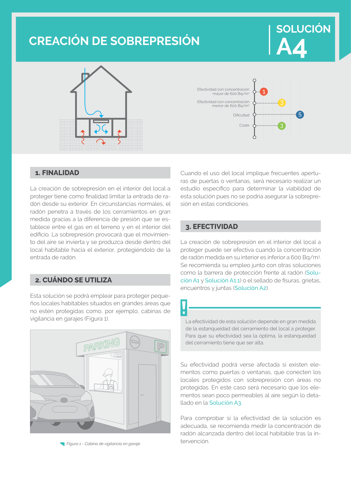

GUIA · Solucion A4 - Creacion de sobrepresion · versión sin-fecha · capa guia
Formatos: JSON compacto · Markdown · PDF fuente
Ámbito del documento · texto del ámbito · documento y tablas
Tipo: tablas, figuras · nivel 1 · sección estimada: Solucion A4 - Creacion de sobrepresion · padre:
Efectividad con concentración mayor de 600 Bq/m3 Efectividad con concentración menor de 600 Bq/m3 Dificultad Coste 1 3 5 3

PDF fuente redistribuible: copia fiel enlazada en esta página (SHA256 verificado).